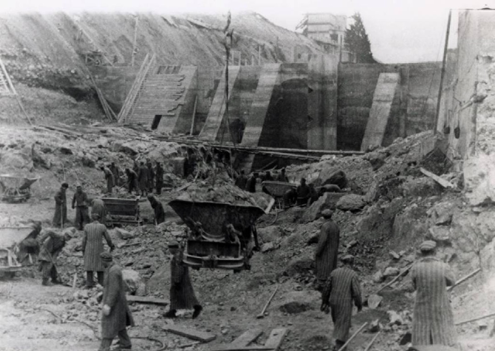
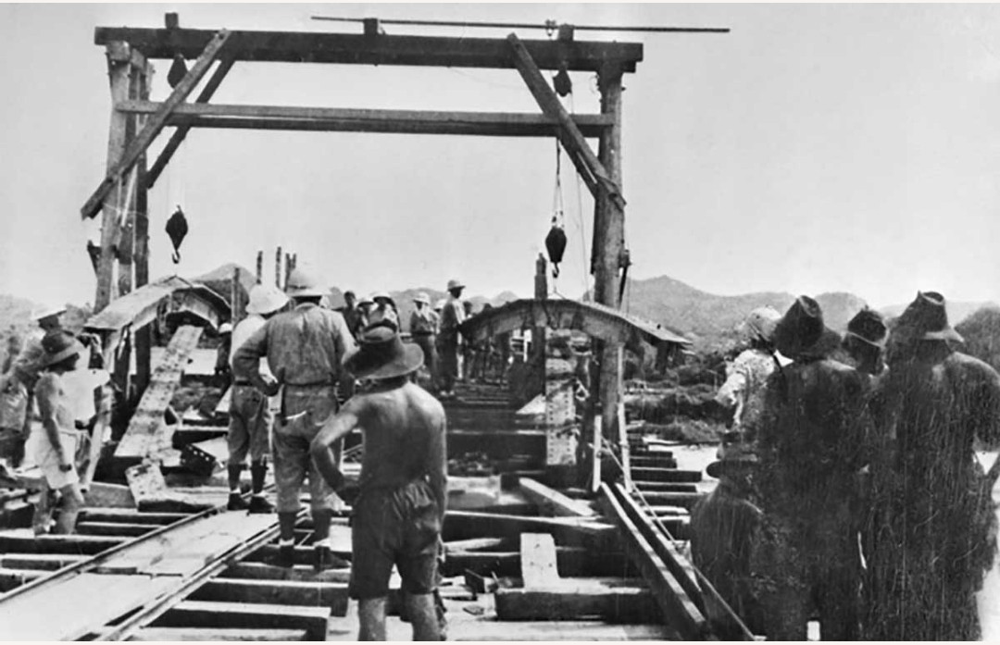
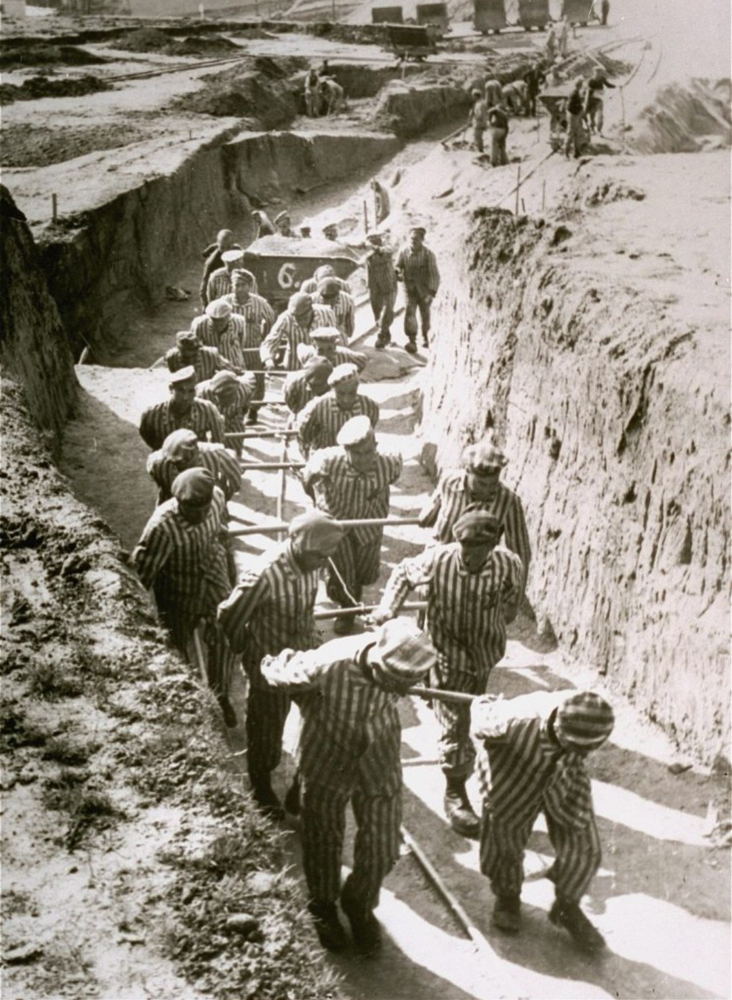

Le travail forcé est l’un des piliers économiques du régime nazi. Entre 1939 et 1945, plus de 12 millions de personnes sont réquisitionnées, déportées ou contraintes de travailler pour l’Allemagne, souvent dans des conditions extrêmes, dangereuses et mortelles.
Dès le début de la guerre, le Reich manque de main-d’œuvre. Il met alors en place un système d’exploitation massive :
Le travail forcé devient une arme économique et une méthode de persécution.

Une grande partie des travailleurs forcés est envoyée sur des chantiers :
Les conditions sont souvent extrêmes : froid, chaleur, journées interminables, coups, malnutrition.

Dans les camps de concentration, le travail forcé devient une méthode de mise à mort lente. Les déportés sont affectés à :
L’objectif est double : produire pour l’effort de guerre et anéantir les populations jugées “indésirables”.
Le travail forcé provoque la mort de centaines de milliers de personnes, victimes de :
Il constitue l’un des crimes majeurs du régime nazi.
Après la guerre, plusieurs pays ont reconnu la souffrance des travailleurs forcés. Des mémoriaux, musées et programmes de compensation ont été mis en place pour préserver la mémoire de ces millions de victimes.